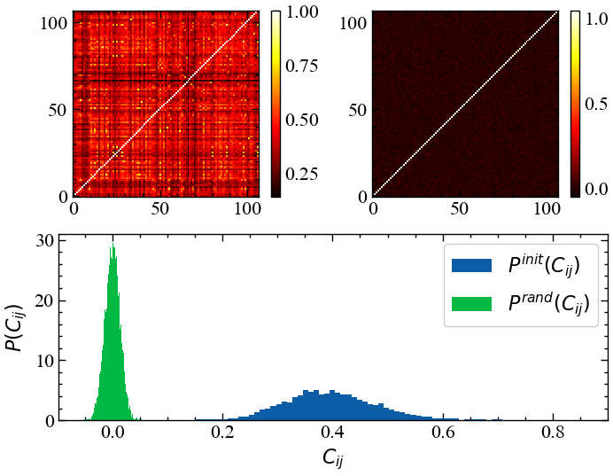
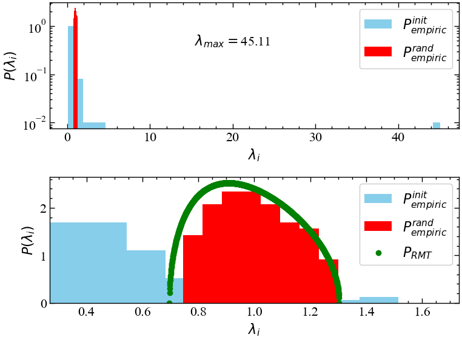
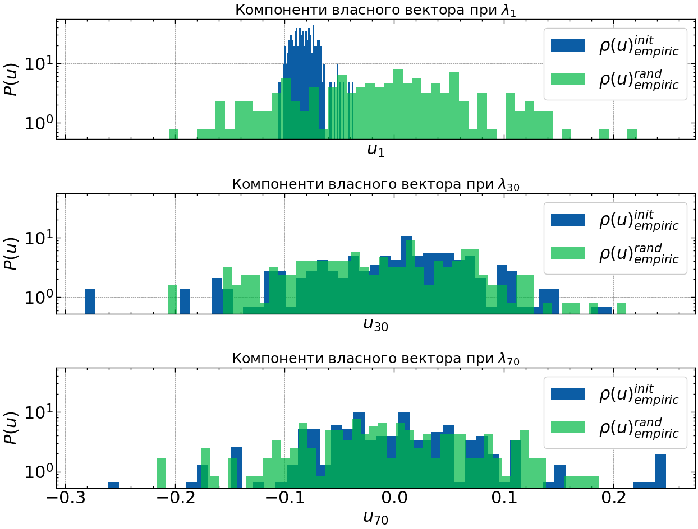
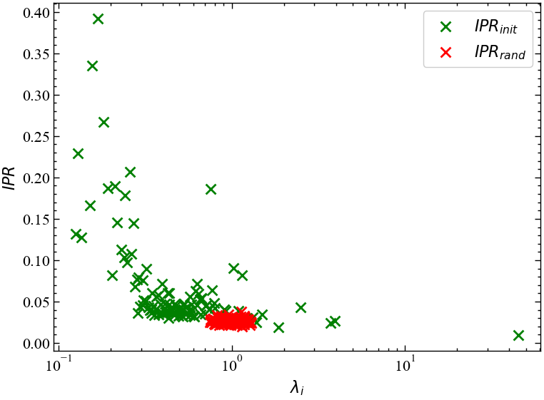
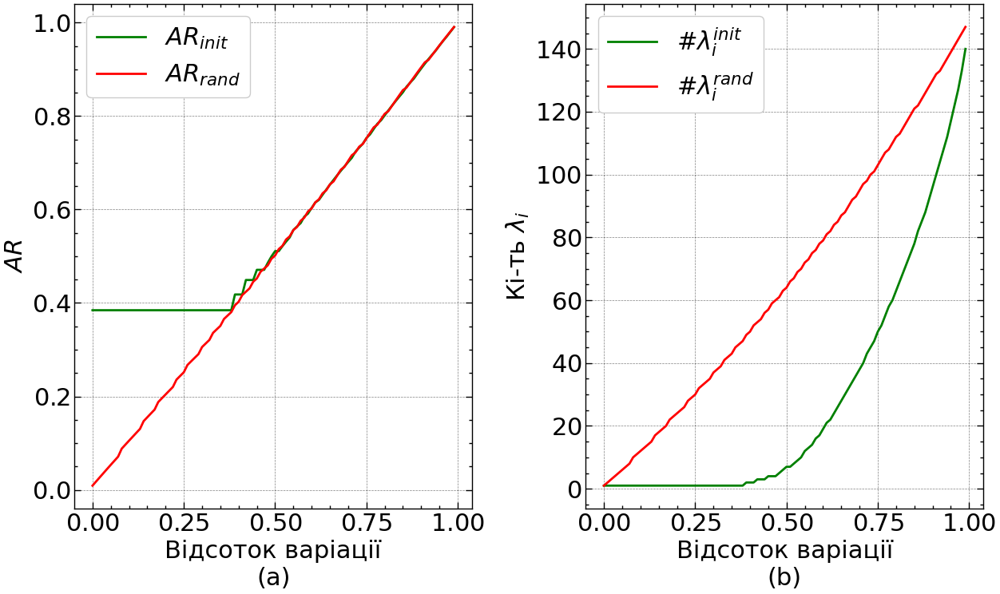
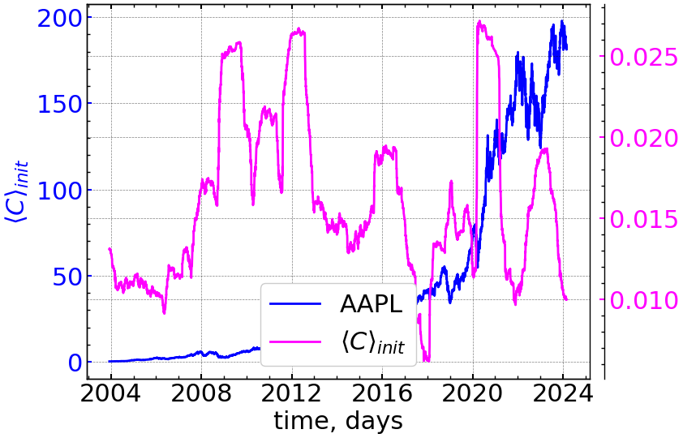
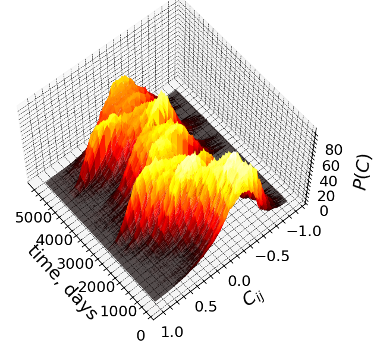
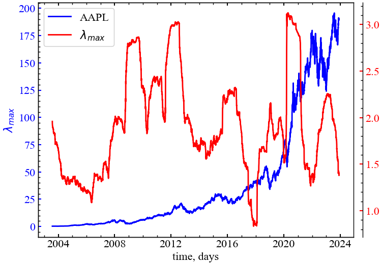
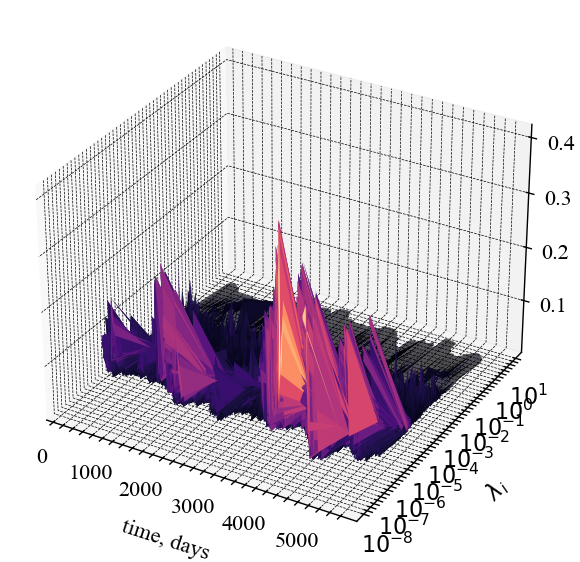
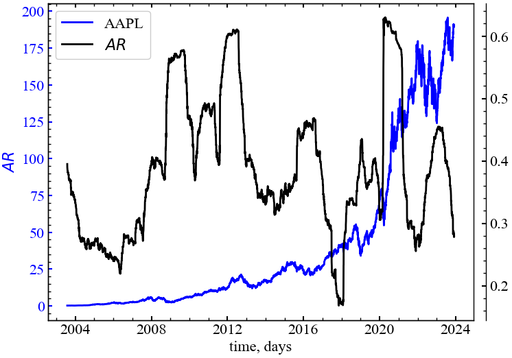

import numpy as np
import matplotlib.pyplot as plt
import matplotlib.gridspec as gridspec
import matplotlib.ticker as mticker
import pandas as pd
import yfinance as yf
import scienceplots
import requests
from tqdm import tqdm
%matplotlib inline8 Лабораторна робота № 8
Тема. Дослідження процесів самоорганізації в складних системах із використання теорії випадкових матриць
Мета. Навчитись використовувати методи теорії випадкових матриць для отримання «прихованої» інформації в складних економічних системах
8.1 Теоретичні відомості
Вивчення статистичних властивостей матриць з незалежними випадковими елементами — випадкових матриць — має багату історію, що починається з ядерної фізики [1–7], де проблема з’явилася 50 років тому при дослідженні енергетичних рівнів складних ядер, що існуючі на той час моделі були не в змозі пояснити. Теорія випадкової матриці (ТВМ) була розвинена в цьому контексті Вігнером (Wigner), Дайсоном (Dyson), Метою (Mehta) та іншими для пояснення статистики рівнів енергії складних квантових систем. Дослідники постулювали, що функція Гамільтона, яка описує важкі ядра, може бути задана матрицею \(H\) з незалежними випадковими елементами \(H_{ij}\), отриманими з розподілу імовірності. Відштовхуючись від цього припущення було зроблено низку вражаючих передбачень, які було підтверджено експериментально. Для складних квантових систем передбачення на основі ТВМ представляють середнє за всіма можливими взаємодіями. Відхилення від універсальних передбачень ТВМ відображують системну специфіку, невипадкові властивості системи, забезпечуючи ключові підходи до розуміння базової взаємодії системи. Недавні дослідження, що використовували методи аналізу ТВМ до аналізу властивостей матриці взаємних кореляцій \(C\), показують, що близько 98% власних значень матриці \(C\) співпадають зі значеннями, отримуваними з використанням ТВМ, таким чином пропонуючи задовільний рівень хаотичності у вимірюваних крос-кореляціях. Також було знайдено, що існують відхилення від передбачень за допомогою ТВМ у близько 2% найбільших власних значень. Ці результати викликають наступні питання:
- Яка можлива інтерпретація для відхилень від ТВМ?
- Що можна сказати про структуру C з цих результатів?
- Яке практичне значення отриманих результатів?
Шляхом комп’ютерного моделювання виявлено, що найбільше власне значення матриці \(C\) представляє вплив усього ринку, що є звичайним для всіх акцій. Аналіз змісту власних значень, що відхиляються від ТВМ, показує існування взаємних кореляцій між акціями того ж самого типу промисловості, найбільш капіталізованими акціями, і акціями фірм, що мають бізнес у певному географічному секторі (локалізовані територіально). Обчислюючи скалярний добуток власних векторів від одного періоду часу до наступного, можна побачити, що “власні вектори, що відхиляються”, мають різні ступені стабільності в часі, визначеному кількісно величиною скалярного добутку. Найбільші два-три власних вектори стійкі протягом тривалих періодів часу, у той час як для іншої частини власних векторів, що відхиляються, стабільність у часі зменшується як тільки відповідні власні значення наближаються до верхньої межі ТВМ.
8.1.1 Знаходження коефіцієнтів матриці крос-кореляцій
Визначення кореляцій між різними акціями — тема, цікава не лише з точки зору наукових причин розуміння економіки як складної динамічної системи, але також і з практичних поглядів, зокрема, з точки зору розміщення активів і оцінки портфельного ризику. Ми будемо аналізувати взаємні кореляції між акціями, застосовуючи поняття і методи теорії випадкових матриць, що використовуються в контексті складних квантових систем, де точний характер взаємодій між підодиницями невідомий.
Для визначення кількісно кореляцій спочатку обчислюється зміна цін (прибутковості) акції \(i=1,...,N\) за час \(\Delta t\),
\[ G_{i}(t) = \ln S_i(t+\Delta t) - \ln S_i(t), \qquad(8.1)\]
де \(S_i(t)\) позначає ціну акції \(i\). Оскільки різні ціни мають різні рівні змінюванності (стандартні відхилення), визначатимемо стандартизовану прибутковість
\[ g_i(t) \equiv \left[ G_i(t) - \left\langle G_i \right\rangle \right] \big/ \sigma_i, \qquad(8.2)\]
де \(\sigma_i \equiv \sqrt{\left\langle G_{i}^{2} \right\rangle - \left\langle G_i \right\rangle^{2}}\) — стандартне відхилення \(G_i\), а \(\left\langle...\right\rangle\) позначає середнє значення за досліджуваний період часу. Тобі обчислення кореляцій \(C\) зводиться до обчислення формули:
\[ C_{ij} \equiv \left\langle g_i(t)g_j(t) \right\rangle. \qquad(8.3)\]
Згідно з побудовою елементи \(C_{ij}\) обмежені областю \(−1 \leq C_{ij} \leq 1\), де \(C_{ij} = 1\) відповідає повним кореляціям, \(C_{ij} = -1\) — повним антикореляціям, і \(C_{ij} = 0\) свідчить про некорельованність пар акцій.
Труднощі в аналізі важливості та значення коефіцієнтів крос-кореляції \(C_{ij}\) виникають внаслідок кількох причин, що полягають в наступному:
- ринкові умови з часом змінюються і взаємна кореляція, що існує між будь-якою парою акцій, може бути не постійною (нестаціонарною);
- скінчена довжина досліджуваного ряду, доступного для оцінювання взаємних кореляцій, додає так званий “шум вимірювання” — чим коротший досліджуваний ряд — тим менш точними будуть отримувані значення.
Якщо буде використано довгий ряд для вилучення проблеми скінченної довжини, на отримані значення буде впливати нестаціонарність крос-кореляцій. З цих причин, емпірично виміряні крос-кореляції будуть містити “випадкові” складові, і найбільш важливою (і одночасно важкою проблемою) є оцінка в складі матриці \(C\) таких взаємних кореляцій, що не є результатом випадковості.
Яким же чином можна виділяти з \(C_{ij}\) ті акції, що залишилися корельованими на розглядуваному періоді часу? Щоб відповісти на це питання, перевіримо статистику \(C\) у порівнянні із так званою “нульовою гіпотезою” випадкової кореляційної матриці — матриці кореляцій, побудованої із взаємно некорельованих часових рядів. Якщо властивості \(C\) відповідають властивостям для випадкової матриці кореляцій, тоді можна говорити про те, що значення емпірично вимірюваних властивостей \(C\) випадкові. Навпаки, відхилення властивостей \(C\) від таких же властивостей для випадкової кореляційної матриці передає інформацію про “справжні” кореляції. Таким чином, нашою метою є порівняння властивостей \(C\) з такими ж властивостями випадкової матриці кореляцій і розділ властивостей \(C\) на дві групи: (a) частина \(C\), що відповідає властивостям випадкової кореляційної матриці (“шум”) і (b) частина \(C\), що відхиляється (“інформація”).
8.1.2 Розподіл власних значень
Для отримання інформації про взаємні кореляції \(C\) необхідно порівняти властивості \(C\) з такими ж властивостями випадкової матриці крос-кореляцій [8]. У матричній нотації така матриця може бути виражена як
\[ C = \frac{1}{L} GG^{T}, \qquad(8.4)\]
де \(G\) — матриця розміру \(N \times L\) з елементами \(g_{im}=g_i(m\Delta t), i=1,...,N; m=0,...,L-1\) і \(G^{T}\) позначає транспонування \(G\). Розглянемо випадкову кореляційну матрицю
\[ R = \frac{1}{L} AA^{T}, \qquad(8.5)\]
де \(A\) — матриця розміру \(N \times L\), що містить \(N\) часових рядів із \(L\) випадковими елементів \(a_{im}\) з нульовим середнім і одиничним відхиленням, що означають взаємну некорельованість. За побудовою \(R\) належить до типу матриць, які часто називають матрицями Вішарта у багатовимірній статистиці [9].
Статистичні властивості випадкових матриць \(R\) відомі [10,11]. Зокрема, у наближенні \(N \to \infty\), \(L \to \infty\), такому, що \(Q \equiv L/N(>1)\) фіксоване, показано аналітично [11], що функція розподілу щільності імовірності \(P_{rm}(\lambda)\) власних значень \(\lambda\) випадкової матриці кореляції \(R\) визначається як
\[ P_{rm}(\lambda) = \frac{Q}{2\pi}\frac{\sqrt{(\lambda_{+} - \lambda)(\lambda - \lambda_{-})}}{\lambda} \qquad(8.6)\]
де \(\lambda\) в межах границь \(\lambda_{-} \leq \lambda_{i} \leq \lambda_{+}\), де \(\lambda_{-}\) і \(\lambda_{+}\) — найменше та найбільше власні значення \(R\), які можна визначити аналітично як
\[ \lambda_{\pm} = 1 + 1/Q \pm 2\sqrt{1/Q}. \qquad(8.7)\]
Звертаємо вашу увагу, що вираз (Рівняння 8.6) є точним для випадку розподілених за Гаусом матричних елементів \(a_{im}\).
Порівняємо розподіл власних значень \(P(\lambda)\) для \(C\) з \(P_{rm}(\lambda)\). Для цього обчислимо власні значення \(\lambda_i\) матриці \(C\), причому \(\lambda_i\) впорядкуємо за зростанням (\(\lambda_{i+1} > \lambda_{i}\)). При дослідженнях зверніть увагу на присутність чіткої “великої частини” власних значень, що спадають у межах границь \([\lambda_{-}, \lambda_{+}]\) для \(P_{rm}(\lambda)\). Також зверніть увагу на відхилення для деяких найбільших і найменших власних значень власних значень отриманих за допомогою ТВМ.
Оскільки Рівняння 8.6 є такою, що строго відповідає лише для \(L \to \infty\) і \(N \to \infty\), необхідно перевірити також відхилення від ідеального випадку, оскільки робота проводиться завжди із скінченими рядами. При дослідженнях виявляється, що для кількох найбільших (найменших) власних значень ефект впливу скінчених величин \(L\) і \(N\) відсутній.
8.1.3 Розподіл власних векторів
Відхилення \(P(\lambda)\) від передбачення ТВМ \(P_{rm}(\lambda)\) свідчить про те, що ці відхилення також повинні відображатися в статистиці відповідних компонент власного вектора [8]. Відповідно, у даній лабораторній ми будемо аналізувати розподіл компонент власного вектора. Розподіл компонент \(\left\{ u_{l}^{k}; l=1,...,N \right\}\) власного вектора \(u^k\) випадкової кореляційної матриці \(R\) має відповідати розподілу Гауса з нульовим середнім та одиничною дисперсією,
\[ \rho_{rm}(u) = \frac{1}{\sqrt{2\pi}}\exp\left( -u^{2} \big/ 2 \right). \]
8.1.4 Обернене відношення участі
Вивчивши інтерпретацію найбільшого власного значення, що значно відхиляється від результатів ТВМ, зосередимось на власних значеннях, що залишаються. Відхилення розподілу компонентів власного вектора \(u_k\) від ТВМ Гаусового передбачення більш явне, коли відстань від верхньої границі ТВМ \(\lambda_k - \lambda_{+}\) збільшується. Оскільки близькість до \(\lambda_{+}\) збільшує ефекти хаотичності визначаємо кількість компонентів, що беруть значну участь в кожному власному векторі, що, у свою чергу, відображає ступінь відхилення від ТВМ для розподілу компонентів власного вектора. Для цього використовується поняття оберненого відношення участі (ОВУ) [12–14], що часто застосовується в теорії локалізації. ОВУ власного вектора \(u_k\) визначається як
\[ I^{k} \equiv \sum_{l=1}^{N}\left[ u_{l}^{k} \right]^4, \qquad(8.8)\]
де \(u_{l}^{k}\), \(l=1,...,N\) — компоненти власного вектора \(u^{k}\). Значення \(I^{k}\) може бути проілюстровано двома граничними випадками:
- вектор з ідентичними компонентами \(u_{l}^{k} \equiv 1 \big/ \sqrt{N}\) має \(I^{k} = 1 \big/ N\);
- вектор з одним компонентом \(u_{1}^{k}=1\) і нульовими іншими має \(I^{k}=1\).
Таким чином, ОВУ визначає кількість даних з числа компонентів власного вектора, що значний впливають на ринок, заданий системою часових рядів. Наявність векторів з великими значеннями \(I^{k}\) також виникає в теорії локалізації Андерсона. У контексті теорії локалізації часто знаходять “випадкову смугу матриць”, що містять узагальнені стани з маленьким \(I^{k}\) в більшій частині спектра власних значень, тоді як основні стани локалізовані і мають великі \(I^{k}\). Виявлення локалізованих станів для маленьких і великих власних значень матриці крос-кореляцій \(C\) нагадує про локалізацію Андерсона і припускає, що \(C\) може мати випадкову зону матричної структури.
8.2 Хід роботи
Імпортуємо необхідні бібліотеки:
Визначаємо стиль рисунків:
plt.style.use(['science', 'notebook', 'grid']) # стиль, що використовуватиметься
# для виведення рисунків
params = {
'figure.figsize': (8, 6), # встановлюємо ширину та висоту рисунків за замовчуванням
'font.size': 22, # розмір фонтів рисунку
'lines.linewidth': 2, # товщина ліній
'axes.titlesize': 'small', # розмір титулки над рисунком
"font.family": "sans-serif", # сімейство стилів підписів
"font.serif": ["Times"], # стиль підпису
'savefig.dpi': 300 # якість збережених зображень
}
plt.rcParams.update(params) # оновлення стилю згідно налаштуваньВиконуємо парсинг та фільтрацію заголовків акцій компаній:
headers = {
'authority': 'api.nasdaq.com',
'accept': 'application/json, text/plain, */*',
'user-agent': 'Mozilla/5.0 (Windows NT 10.0; Win64; x64) AppleWebKit/537.36 (KHTML, like Gecko) Chrome/87.0.4280.141 Safari/537.36',
'origin': 'https://www.nasdaq.com',
'sec-fetch-site': 'same-site',
'sec-fetch-mode': 'cors',
'sec-fetch-dest': 'empty',
'referer': 'https://www.nasdaq.com/',
'accept-language': 'en-US,en;q=0.9',
}
params = (
('tableonly', 'true'),
('limit', '25'),
('offset', '0'),
('download', 'true'),
)
r = requests.get('https://api.nasdaq.com/api/screener/stocks', headers=headers, params=params)
data = r.json()['data']
df = pd.DataFrame(data['rows'], columns=data['headers'])
df = df.dropna(subset={'marketCap'})
df = df[~df['symbol'].str.contains("\/|\.|\^")]
df.head()| symbol | name | lastsale | netchange | pctchange | marketCap | country | ipoyear | volume | sector | industry | url | |
|---|---|---|---|---|---|---|---|---|---|---|---|---|
| 0 | A | Agilent Technologies Inc. Common Stock | $131.55 | 0.56 | 0.428% | 38544689618.00 | United States | 1999 | 121107 | Industrials | Electrical Products | /market-activity/stocks/a |
| 1 | AA | Alcoa Corporation Common Stock | $30.011 | -0.599 | -1.957% | 5356120431.00 | United States | 2016 | 934231 | Industrials | Aluminum | /market-activity/stocks/aa |
| 2 | AACG | ATA Creativity Global American Depositary Shares | $1.08 | 0.00 | 0.00% | 34151944.00 | China | 2008 | 1076 | Real Estate | Other Consumer Services | /market-activity/stocks/aacg |
| 3 | AACI | Armada Acquisition Corp. I Common Stock | $10.90 | 0.00 | 0.00% | 0.00 | United States | 2021 | 111 | Finance | Blank Checks | /market-activity/stocks/aaci |
| 4 | AACIU | Armada Acquisition Corp. I Unit | $10.70 | 0.00 | 0.00% | 0.00 | United States | 2021 | 4 | Finance | Blank Checks | /market-activity/stocks/aaciu |
Фільтруємо та сортуємо заголовків акцій за їх капіталізацією:
def cust_filter(mkt_cap):
if 'M' in mkt_cap:
return float(mkt_cap[1:-1])
elif 'B' in mkt_cap:
return float(mkt_cap[1:-1]) * 1000
elif mkt_cap == '':
return 0.0
else:
return float(mkt_cap[1:]) / 1e6
df['marketCap'] = df['marketCap'].apply(cust_filter)
df = df.sort_values('marketCap', ascending=False)
df.head()| symbol | name | lastsale | netchange | pctchange | marketCap | country | ipoyear | volume | sector | industry | url | |
|---|---|---|---|---|---|---|---|---|---|---|---|---|
| 17 | AAPL | Apple Inc. Common Stock | $190.935 | -1.485 | -0.772% | 952217.112760 | United States | 1980 | 11805837 | Technology | Computer Manufacturing | /market-activity/stocks/aapl |
| 2944 | GOOG | Alphabet Inc. Class C Capital Stock | $153.43 | -0.36 | -0.234% | 920329.880000 | United States | 2004 | 4722822 | Technology | Computer Software: Programming Data Processing | /market-activity/stocks/goog |
| 2945 | GOOGL | Alphabet Inc. Class A Common Stock | $151.96 | -0.225 | -0.148% | 901931.360000 | United States | 2004 | 6069308 | Technology | Computer Software: Programming Data Processing | /market-activity/stocks/googl |
| 408 | AMZN | Amazon.com Inc. Common Stock | $159.435 | 0.315 | 0.198% | 647606.166479 | United States | 1997 | 9424297 | Consumer Discretionary | Catalog/Specialty Distribution | /market-activity/stocks/amzn |
| 4744 | NVDA | NVIDIA Corporation Common Stock | $617.655 | 7.345 | 1.203% | 525607.850000 | United States | 1999 | 9545670 | Technology | Semiconductors | /market-activity/stocks/nvda |
Визначаємо найпередовіші акцій за їх капіталізацією:
top = 200
tickers_list = df.iloc[:top]['symbol'].tolist()
tickers_list[:10]['AAPL', 'GOOG', 'GOOGL', 'AMZN', 'NVDA', 'V', 'JPM', 'LIN', 'ABT', 'ABBV']Зчитуємо дані з Yahoo Finance згідно створенного списку акцій:
start = "2001-12-31"
end = "2024-01-29"
data_init = yf.download(tickers_list, start, end)["Adj Close"]
xlabel = 'time, days' # підпис по вісі Ох Далі нам потребується обрати фінансовий індекс для порівняння з розрахованими індикаторами. Далі надається список усіх доступних для нас акцій:
ylabel = 'A' # підпис по вісі Оу
data_init.columns.valuesarray(['A', 'AAPL', 'ABT', 'ACGL', 'ACN', 'ADBE', 'AFL', 'AIG', 'AJG',
'AMAT', 'AMD', 'AMGN', 'AMZN', 'ANSS', 'AON', 'APH', 'ASML',
'AXON', 'AXP', 'BA', 'BAC', 'BAX', 'BCS', 'BDX', 'BHP', 'BKNG',
'BLK', 'BMO', 'BSX', 'CAT', 'CCJ', 'CDNS', 'CHKP', 'CL', 'CMCSA',
'CNC', 'CNI', 'CNQ', 'COP', 'CRH', 'CSCO', 'CSX', 'CTRA', 'CTSH',
'CVX', 'DE', 'DECK', 'DHR', 'DIS', 'DLTR', 'DRI', 'ELV', 'EPD',
'ERIC', 'ES', 'EXPD', 'FAST', 'FMX', 'GE', 'GILD', 'GPC', 'GS',
'GSK', 'HBAN', 'HD', 'HDB', 'HON', 'HPQ', 'HSBC', 'HSY', 'IBM',
'INTC', 'INTU', 'IRM', 'ISRG', 'ITW', 'JNJ', 'JPM', 'K', 'KO',
'KOF', 'LH', 'LHX', 'LIN', 'LLY', 'LNG', 'LOW', 'LRCX', 'LYG',
'MCD', 'MDT', 'MFC', 'MKL', 'MRVL', 'MS', 'MSFT', 'MUFG', 'NEE',
'NEM', 'NFLX', 'NKE', 'NVDA', 'NVO', 'NVS', 'O', 'ORCL', 'PBR',
'PCG', 'PEG', 'PEP', 'PFE', 'PFG', 'PG', 'PHG', 'PLD', 'PPL',
'PUK', 'QCOM', 'RIO', 'RMD', 'ROP', 'RTX', 'RY', 'RYAAY', 'SAP',
'SCHW', 'SLF', 'SNY', 'SONY', 'SPGI', 'STLD', 'STM', 'STX', 'SYK',
'T', 'TD', 'TDY', 'TJX', 'TM', 'TMO', 'TS', 'TSN', 'TTE', 'TXN',
'UL', 'UMC', 'UNH', 'UNP', 'UPS', 'VMC', 'VRTX', 'VTR', 'VZ',
'WAT', 'WBA', 'WCN', 'WDC', 'WDS', 'WFC', 'WMT'], dtype=object)perc = 5.0
min_count = int(((100-perc)/100)*data_init.shape[0] + 1)
data_init = data_init.dropna(axis=1, thresh=min_count)
data_init| A | AAPL | ABT | ACGL | ACN | ADBE | AFL | AIG | AJG | AMAT | ... | VRTX | VTR | VZ | WAT | WBA | WCN | WDC | WDS | WFC | WMT | |
|---|---|---|---|---|---|---|---|---|---|---|---|---|---|---|---|---|---|---|---|---|---|
| Date | |||||||||||||||||||||
| 2001-12-31 | 17.297586 | 0.331503 | 14.912388 | 2.861111 | 19.321150 | 15.452659 | 7.743106 | 979.726379 | 17.191076 | 14.783871 | ... | 24.590000 | 4.431195 | 14.652889 | 38.750000 | 20.802359 | 5.453039 | 5.033543 | 2.791204 | 11.735176 | 37.910130 |
| 2002-01-02 | 17.746569 | 0.352695 | 14.936458 | 2.945556 | 18.811562 | 15.845817 | 7.497190 | 971.706116 | 16.916937 | 15.362686 | ... | 24.540001 | 4.569910 | 14.970884 | 38.750000 | 20.443911 | 5.303473 | 4.929180 | 2.770977 | 11.727076 | 38.239510 |
| 2002-01-03 | 18.868996 | 0.356933 | 14.949837 | 3.008889 | 18.223030 | 16.462931 | 7.415218 | 969.608521 | 16.597942 | 16.771030 | ... | 24.170000 | 4.785689 | 15.467970 | 37.990002 | 21.265877 | 5.322829 | 4.929180 | 2.791204 | 11.770274 | 38.193398 |
| 2002-01-04 | 19.888290 | 0.358599 | 14.923080 | 2.984444 | 19.880976 | 17.866360 | 7.541327 | 959.984192 | 16.358702 | 16.671478 | ... | 23.950001 | 4.700920 | 15.625427 | 38.889999 | 21.358564 | 5.122231 | 5.178046 | 2.831656 | 11.799970 | 37.943069 |
| 2002-01-07 | 19.809412 | 0.346641 | 14.818761 | 2.997778 | 18.983816 | 17.995752 | 7.289105 | 947.644836 | 15.880191 | 16.494522 | ... | 23.790001 | 4.758718 | 15.529716 | 38.740002 | 21.556326 | 4.999060 | 5.507194 | 2.892334 | 11.818866 | 37.804741 |
| ... | ... | ... | ... | ... | ... | ... | ... | ... | ... | ... | ... | ... | ... | ... | ... | ... | ... | ... | ... | ... | ... |
| 2024-01-22 | 132.550003 | 193.889999 | 114.190002 | 80.470001 | 367.209991 | 603.590027 | 84.500000 | 69.260002 | 237.520004 | 168.300003 | ... | 440.109985 | 48.439999 | 39.580002 | 317.049988 | 22.559999 | 152.600006 | 57.000000 | 20.430000 | 48.529999 | 162.389999 |
| 2024-01-23 | 131.639999 | 195.179993 | 114.000000 | 80.339996 | 369.859985 | 597.179993 | 84.639999 | 69.000000 | 239.679993 | 167.050003 | ... | 439.700012 | 47.680000 | 42.230000 | 316.440002 | 22.580000 | 153.350006 | 57.730000 | 20.510000 | 49.119999 | 162.800003 |
| 2024-01-24 | 129.779999 | 194.500000 | 110.769997 | 80.129997 | 368.899994 | 606.479980 | 85.000000 | 69.160004 | 239.070007 | 174.139999 | ... | 427.559998 | 47.549999 | 41.279999 | 312.420013 | 22.370001 | 151.800003 | 58.029999 | 20.379999 | 49.490002 | 160.500000 |
| 2024-01-25 | 129.880005 | 194.169998 | 112.449997 | 79.599998 | 371.940002 | 622.580017 | 84.889999 | 68.980003 | 237.750000 | 172.630005 | ... | 429.959991 | 47.439999 | 42.290001 | 312.000000 | 23.110001 | 153.429993 | 60.330002 | 20.660000 | 49.880001 | 162.839996 |
| 2024-01-26 | 130.990005 | 192.419998 | 112.010002 | 79.900002 | 371.070007 | 613.929993 | 85.309998 | 69.529999 | 233.029999 | 166.899994 | ... | 430.170013 | 47.400002 | 42.400002 | 316.119995 | 22.850000 | 154.410004 | 58.230000 | 20.670000 | 50.320000 | 164.270004 |
5556 rows × 160 columns
data_init = data_init.dropna(axis=0)
data_init| A | AAPL | ABT | ACGL | ACN | ADBE | AFL | AIG | AJG | AMAT | ... | VRTX | VTR | VZ | WAT | WBA | WCN | WDC | WDS | WFC | WMT | |
|---|---|---|---|---|---|---|---|---|---|---|---|---|---|---|---|---|---|---|---|---|---|
| Date | |||||||||||||||||||||
| 2002-12-16 | 10.690413 | 0.224787 | 11.187967 | 3.474444 | 12.775499 | 13.237535 | 9.424965 | 758.508911 | 14.975086 | 10.662081 | ... | 16.790001 | 4.659505 | 12.810547 | 20.959999 | 17.952019 | 6.325806 | 5.659726 | 2.912350 | 12.977189 | 34.346539 |
| 2002-12-17 | 10.556931 | 0.228268 | 11.201620 | 3.402222 | 12.976459 | 13.377089 | 9.348700 | 749.475708 | 14.793025 | 10.219672 | ... | 16.950001 | 4.597099 | 12.560366 | 20.950001 | 18.076126 | 6.466575 | 5.563388 | 2.848576 | 12.927494 | 33.685261 |
| 2002-12-18 | 10.223237 | 0.220548 | 11.136068 | 3.372222 | 12.911861 | 12.973383 | 9.374124 | 730.544128 | 14.545205 | 9.777258 | ... | 16.879999 | 4.659505 | 12.589236 | 20.969999 | 17.939608 | 6.514087 | 5.202130 | 2.857079 | 12.775632 | 33.364067 |
| 2002-12-19 | 10.168632 | 0.214947 | 11.032280 | 3.383333 | 12.588892 | 12.729166 | 9.227955 | 718.789368 | 14.464287 | 9.976346 | ... | 16.610001 | 4.659505 | 12.441692 | 20.590000 | 17.983047 | 6.419065 | 5.194102 | 2.891092 | 12.748014 | 33.218376 |
| 2002-12-20 | 10.920969 | 0.214039 | 10.570665 | 3.388889 | 12.308981 | 12.828847 | 9.278793 | 730.915466 | 14.656469 | 9.814127 | ... | 16.670000 | 4.655344 | 12.829791 | 20.799999 | 18.429834 | 6.686528 | 5.410858 | 2.891092 | 12.996518 | 33.635590 |
| ... | ... | ... | ... | ... | ... | ... | ... | ... | ... | ... | ... | ... | ... | ... | ... | ... | ... | ... | ... | ... | ... |
| 2024-01-22 | 132.550003 | 193.889999 | 114.190002 | 80.470001 | 367.209991 | 603.590027 | 84.500000 | 69.260002 | 237.520004 | 168.300003 | ... | 440.109985 | 48.439999 | 39.580002 | 317.049988 | 22.559999 | 152.600006 | 57.000000 | 20.430000 | 48.529999 | 162.389999 |
| 2024-01-23 | 131.639999 | 195.179993 | 114.000000 | 80.339996 | 369.859985 | 597.179993 | 84.639999 | 69.000000 | 239.679993 | 167.050003 | ... | 439.700012 | 47.680000 | 42.230000 | 316.440002 | 22.580000 | 153.350006 | 57.730000 | 20.510000 | 49.119999 | 162.800003 |
| 2024-01-24 | 129.779999 | 194.500000 | 110.769997 | 80.129997 | 368.899994 | 606.479980 | 85.000000 | 69.160004 | 239.070007 | 174.139999 | ... | 427.559998 | 47.549999 | 41.279999 | 312.420013 | 22.370001 | 151.800003 | 58.029999 | 20.379999 | 49.490002 | 160.500000 |
| 2024-01-25 | 129.880005 | 194.169998 | 112.449997 | 79.599998 | 371.940002 | 622.580017 | 84.889999 | 68.980003 | 237.750000 | 172.630005 | ... | 429.959991 | 47.439999 | 42.290001 | 312.000000 | 23.110001 | 153.429993 | 60.330002 | 20.660000 | 49.880001 | 162.839996 |
| 2024-01-26 | 130.990005 | 192.419998 | 112.010002 | 79.900002 | 371.070007 | 613.929993 | 85.309998 | 69.529999 | 233.029999 | 166.899994 | ... | 430.170013 | 47.400002 | 42.400002 | 316.119995 | 22.850000 | 154.410004 | 58.230000 | 20.670000 | 50.320000 | 164.270004 |
5314 rows × 160 columns
data = data_init.T
data| Date | 2002-12-16 | 2002-12-17 | 2002-12-18 | 2002-12-19 | 2002-12-20 | 2002-12-23 | 2002-12-24 | 2002-12-26 | 2002-12-27 | 2002-12-30 | ... | 2024-01-12 | 2024-01-16 | 2024-01-17 | 2024-01-18 | 2024-01-19 | 2024-01-22 | 2024-01-23 | 2024-01-24 | 2024-01-25 | 2024-01-26 |
|---|---|---|---|---|---|---|---|---|---|---|---|---|---|---|---|---|---|---|---|---|---|
| A | 10.690413 | 10.556931 | 10.223237 | 10.168632 | 10.920969 | 11.248591 | 11.060510 | 11.102981 | 11.042307 | 10.927034 | ... | 130.539993 | 130.529999 | 128.119995 | 130.460007 | 131.220001 | 132.550003 | 131.639999 | 129.779999 | 129.880005 | 130.990005 |
| AAPL | 0.224787 | 0.228268 | 0.220548 | 0.214947 | 0.214039 | 0.219337 | 0.217370 | 0.217975 | 0.212828 | 0.212980 | ... | 185.919998 | 183.630005 | 182.679993 | 188.630005 | 191.559998 | 193.889999 | 195.179993 | 194.500000 | 194.169998 | 192.419998 |
| ABT | 11.187967 | 11.201620 | 11.136068 | 11.032280 | 10.570665 | 10.414969 | 10.297520 | 10.010720 | 10.046227 | 10.133636 | ... | 113.919998 | 113.760002 | 113.930000 | 114.019997 | 114.690002 | 114.190002 | 114.000000 | 110.769997 | 112.449997 | 112.010002 |
| ACGL | 3.474444 | 3.402222 | 3.372222 | 3.383333 | 3.388889 | 3.397778 | 3.425556 | 3.432222 | 3.387778 | 3.343333 | ... | 77.690002 | 78.169998 | 78.669998 | 78.959999 | 80.879997 | 80.470001 | 80.339996 | 80.129997 | 79.599998 | 79.900002 |
| ACN | 12.775499 | 12.976459 | 12.911861 | 12.588892 | 12.308981 | 12.344862 | 12.538649 | 12.818563 | 12.696548 | 12.789855 | ... | 355.033539 | 353.269989 | 353.649994 | 359.549988 | 363.899994 | 367.209991 | 369.859985 | 368.899994 | 371.940002 | 371.070007 |
| ... | ... | ... | ... | ... | ... | ... | ... | ... | ... | ... | ... | ... | ... | ... | ... | ... | ... | ... | ... | ... | ... |
| WCN | 6.325806 | 6.466575 | 6.514087 | 6.419065 | 6.686528 | 6.670691 | 6.640778 | 6.704123 | 6.635498 | 6.726998 | ... | 148.919998 | 146.830002 | 146.720001 | 149.589996 | 152.199997 | 152.600006 | 153.350006 | 151.800003 | 153.429993 | 154.410004 |
| WDC | 5.659726 | 5.563388 | 5.202130 | 5.194102 | 5.410858 | 5.178046 | 5.418886 | 5.322549 | 5.186075 | 5.073682 | ... | 50.009998 | 52.230000 | 52.320000 | 53.549999 | 54.770000 | 57.000000 | 57.730000 | 58.029999 | 60.330002 | 58.230000 |
| WDS | 2.912350 | 2.848576 | 2.857079 | 2.891092 | 2.891092 | 2.891092 | 2.869833 | 2.869833 | 2.869833 | 2.976125 | ... | 20.940001 | 20.360001 | 20.190001 | 20.219999 | 20.309999 | 20.430000 | 20.510000 | 20.379999 | 20.660000 | 20.670000 |
| WFC | 12.977189 | 12.927494 | 12.775632 | 12.748014 | 12.996518 | 12.993757 | 12.955107 | 12.933015 | 12.783907 | 12.999282 | ... | 47.400002 | 46.820000 | 46.669998 | 46.439999 | 48.119999 | 48.529999 | 49.119999 | 49.490002 | 49.880001 | 50.320000 |
| WMT | 34.346539 | 33.685261 | 33.364067 | 33.218376 | 33.635590 | 32.840885 | 32.913738 | 32.953480 | 32.556122 | 33.536232 | ... | 161.320007 | 161.830002 | 161.070007 | 163.240005 | 162.380005 | 162.389999 | 162.800003 | 160.500000 | 162.839996 | 164.270004 |
160 rows × 5314 columns
8.2.1 Знаходження коефіцієнтів матриці крос-кореляцій
Перш за все нам потребується процедура для перетворення ряду до потрібного нам виду. Для цього визначимо функцію transformation(). З її допомогою для всього ряду та у віконній процедурі будемо рахувати прибутковості та розраховувати всі необхідні індикатори.
def transformation(signal, ret_type):
for_rmt = signal.copy()
if ret_type == 1: # Зважаючи на вид ряду, виконуємо
# необхідні перетворення
for_rmt.values
elif ret_type == 2:
for_rmt = for_rmt.diff(axis=1).iloc[:,1:]
elif ret_type == 3:
for_rmt = for_rmt.pct_change(axis=1).iloc[:,1:]
elif ret_type == 4:
for_rmt = for_rmt.pct_change(axis=1).iloc[:,1:]
for_rmt = for_rmt.values
for_rmt -= np.mean(for_rmt, axis=1, keepdims=True)
for_rmt /= np.std(for_rmt, axis=1, keepdims=True)
elif ret_type == 5:
for_rmt = for_rmt.pct_change(axis=1).iloc[:,1:]
for_rmt = for_rmt.values
for_rmt -= np.mean(for_rmt, axis=1, keepdims=True)
for_rmt /= np.std(for_rmt, axis=1, keepdims=True)
for_rmt = np.abs(for_rmt)
elif ret_type == 6:
for_rmt = for_rmt.values
for_rmt -= np.mean(for_rmt, axis=1, keepdims=True)
for_rmt /= np.std(for_rmt, axis=1, keepdims=True)
return for_rmttype = 4
log_ret = transformation(data, type)N, T = log_ret.shapeБудуємо матрицю кореляцій для матриці прибутковостей наших активів:
def calc_cross_corr(data):
C = (1/T)*np.dot(data, data.T)
di = np.diag_indices(N)
ccoef = np.ma.asarray(C)
ccoef[di] = np.ma.masked
ccoef_flat = ccoef.compressed()
return C, ccoef_flatC, ccoef_flat = calc_cross_corr(log_ret)Carray([[1. , 0.42979246, 0.43304736, ..., 0.3747332 , 0.40580156,
0.33566806],
[0.42979246, 1. , 0.33253841, ..., 0.30379772, 0.33559457,
0.29955249],
[0.43304736, 0.33253841, 1. , ..., 0.26114239, 0.33433625,
0.36327203],
...,
[0.3747332 , 0.30379772, 0.26114239, ..., 1. , 0.37569424,
0.21525548],
[0.40580156, 0.33559457, 0.33433625, ..., 0.37569424, 1. ,
0.28825913],
[0.33566806, 0.29955249, 0.36327203, ..., 0.21525548, 0.28825913,
1. ]])і матрицю кореляцій для перемішаної матриці прибутковостей:
np.random.seed(1234)
random_stocks = np.random.normal(size=(N,T))
R, ccoef_flat_rand = calc_cross_corr(random_stocks)Виводимо результат:
fig = plt.figure(figsize=(15, 10))
gs = gridspec.GridSpec(2, 2)
ax1 = fig.add_subplot(gs[0, 0])
im1 = ax1.imshow(C, cmap='hot', interpolation='nearest')
ax1.invert_yaxis()
fig.colorbar(im1, ax=ax1)
ax2 = fig.add_subplot(gs[0, 1])
im2 = ax2.imshow(R, cmap='hot', interpolation='nearest')
ax2.invert_yaxis()
fig.colorbar(im2, ax=ax2)
ax3 = fig.add_subplot(gs[1, :])
ax3.hist(ccoef_flat, bins='auto', density=True, label=r'$P^{init}(C_{ij})$')
ax3.hist(ccoef_flat_rand, bins='auto', density=True, label=r'$P^{rand}(C_{ij})$')
ax3.set_xlabel(r'$C_{ij}$')
ax3.set_ylabel(r'$P(C_{ij})$')
ax3.legend()
fig.align_labels()
plt.show();
8.2.2 Розподіл власних значень та векторів
def calc_lambd_eig(C):
return np.linalg.eig(C)lambdas, u = calc_lambd_eig(C)
lambdas_rand, u_rand = calc_lambd_eig(R)
Q = T/N
lambda_plus = 1 + 1/Q + 2*np.sqrt(1/Q)
lambda_minus = 1 - 1/Q - 2*np.sqrt(1/Q)
print("Верхня границя розподілу власних значень, що прогнозується ТВМ: ", lambda_plus)
print("Нижня границя розподілу власних значень, що прогнозується ТВМ: ", lambda_minus)Верхня границя розподілу власних значень, що прогнозується ТВМ: 1.3771872127988147
Нижня границя розподілу власних значень, що прогнозується ТВМ: 0.6228127872011853Генеруємо 1000 випадкових значень в діапазоні від \(\lambda_{-}\) до \(\lambda_{+}\), і генеруємо \(P_{rm}(\lambda)\).
lambda_random = np.linspace(lambda_minus, lambda_plus, 1000)
P_rm = (Q/(2*np.pi))*np.sqrt((lambda_plus-lambda_random)*(lambda_random-lambda_minus))/lambda_randomВиводимо результат:
fig, ax = plt.subplots(2, 1, figsize=(13, 10))
ax[0].hist(lambdas, bins=50, density=True, color="skyblue", label='$P^{init}_{\it{empiric}}$')
ax[0].hist(lambdas_rand, bins='auto', density=True, color="red", label='$P^{rand}_{\it{empiric}}$')
ax[0].set_xlabel('$\lambda_{i}$')
ax[0].set_ylabel('$P(\lambda_{i})$')
ax[0].text(20, 0.5, '$\lambda_{max}=$'+f'{lambdas.max():.2f}', ha='center', va='center')
ax[0].set_yscale('log')
ax[0].legend()
ax[1].hist(lambdas, bins='auto', density=True, color="skyblue", label='$P^{init}_{\it{empiric}}$')
ax[1].hist(lambdas_rand, bins='auto', density=True, color="red", label='$P^{rand}_{\it{empiric}}$')
ax[1].set_xlabel('$\lambda_{i}$')
ax[1].set_ylabel('$P(\lambda_{i})$')
ax[1].set_xlim(lambda_minus-3*np.std(lambdas_rand), lambda_plus+3*np.std(lambdas_rand))
ax[1].scatter(lambda_random, P_rm, label='$P_{\it{RMT}}$', color='green')
ax[1].legend()
fig.tight_layout()
plt.show();
fig, ax = plt.subplots(3, 1, figsize=(13, 10), sharex=True, sharey=True)
ax[0].hist(u[:, 0], bins=50, density=True, label=r'$\rho(u)_{empiric}^{init}$')
ax[0].hist(u_rand[:, 0], bins=50, density=True, alpha=0.7, label=r'$\rho(u)_{empiric}^{rand}$')
ax[0].set_xlabel('$u_{1}$')
ax[0].set_ylabel('$P(u)$')
ax[0].set_title('Компоненти власного вектора при $ \lambda_{1} $')
ax[0].legend()
ax[0].set_yscale('log')
ax[1].hist(u[:, 30], bins=50, density=True, label=r'$\rho(u)_{empiric}^{init}$')
ax[1].hist(u_rand[:, 30], bins=50, density=True, alpha=0.7, label=r'$\rho(u)_{empiric}^{rand}$')
ax[1].set_xlabel('$u_{30}$')
ax[1].set_ylabel('$P(u)$')
ax[1].set_title('Компоненти власного вектора при $ \lambda_{30} $')
ax[1].legend()
ax[1].set_yscale('log')
ax[2].hist(u[:, 70], bins=50, density=True, label=r'$\rho(u)_{empiric}^{init}$')
ax[2].hist(u_rand[:, 70], bins=50, density=True, alpha=0.7, label=r'$\rho(u)_{empiric}^{rand}$')
ax[2].set_xlabel('$u_{70}$')
ax[2].set_ylabel('$P(u)$')
ax[2].set_title('Компоненти власного вектора при $ \lambda_{70} $')
ax[2].legend()
ax[2].set_yscale('log')
fig.tight_layout()
plt.show();
8.2.3 Обернене відношення участі
def calc_ipr(u):
return np.sum(u**4, axis=0)IPR = calc_ipr(u)
IPR_rand = calc_ipr(u_rand)fig, ax = plt.subplots(1, 1)
ax.scatter(lambdas, IPR, color='green', label=r'$IPR_{init}$', s=10**2, marker='x')
ax.scatter(lambdas_rand, IPR_rand, color='red', label=r'$IPR_{rand}$', s=10**2, marker='x')
ax.set_xlabel(r'$\lambda_{i}$')
ax.set_ylabel(r'$IPR$')
ax.set_xscale('log')
ax.legend()
fig.tight_layout()
plt.show(); 
8.2.4 Коефіцієнт поглинання
Цікаво буде буде порівняти максимальне власне значення \(\lambda_{max}\) з середнім значенням коефіцієнта кореляції і так званим коефіцієнтом поглинання (absorption ratio, AR), який є кумулятивною мірою ризику і визначається як
\[ AR = \sum_{k=1}^{n}\lambda_k \bigg/ \sum_{k=1}^{N}\lambda_k, \qquad(8.9)\]
і вказує, яку частину загальної варіації описують \(n\) із загальної кількості \(N\) власних значень.
Щоб вирішити, який власний вектор можна відкинути для розрахунків у чисельнику формули вище, не втрачаючи занадто багато інформації, нам потрібно перевірити відповідні власні значення: власні вектори з найменшими власними значеннями несуть найменшу інформацію про розподіл даних; це ті, які можна відкинути.
Загальний підхід полягає в ранжируванні власних значень від найвищого до найнижчого.
Після сортування власних пар наступне запитання: “скільки основних компонентів ми збираємось вибрати для розрахунку коефіцієнту поглинання?”. Корисною мірою є так звана “врахована (пояснена) дисперсія”, яка може бути обчислена за власними значеннями. Пояснена дисперсія говорить нам, скільки інформації (дисперсії) можна віднести до кожної із головних компонент.
Визначимо слідуючу функцію для коефіцієнту поглинання:
def ar(lambdas, proc):
# сортуємо власні значення у спадному порядку
sorted_lambdas = np.sort(lambdas)[::-1]
# розраховуємо кумулятивну варіацію
cumulative_variance = np.cumsum(sorted_lambdas) / np.sum(sorted_lambdas)
# знаходимо індекс, де кумулятивна варіація перетинає "proc"
index_percent = np.argmax(cumulative_variance >= proc) + 1
# виділяємо верхні власні значення, які описують встановлений відсоток даних
selected_lambdas = sorted_lambdas[:index_percent]
# повертаємо коефіцієнт поглинання та кількість значень, що пояснюють обраний відсоток варіації
return np.sum(selected_lambdas)/np.sum(sorted_lambdas), len(selected_lambdas)Розрахуємо коефіцієнт поглинання як для власних значень вихідної матриці кореляцій, так і для випадкової. Тут ми розглянемо як варіюється коефіцієнт поглинання при різних значеннях поясненої варіації власними значеннями матриці кореляцій:
proc_variance = np.linspace(0, 0.99, 100)
ar_init = np.array([ar(lambdas, proc)[0] for proc in proc_variance])
ar_rand = np.array([ar(lambdas_rand, proc)[0] for proc in proc_variance])
lambdas_init_cnt = np.array([ar(lambdas, proc)[1] for proc in proc_variance])
lambdas_rand_cnt = np.array([ar(lambdas_rand, proc)[1] for proc in proc_variance])
fig, ax = plt.subplots(1, 2, figsize=(13, 8))
ax[0].plot(proc_variance, ar_init, color='green', label=r'$AR_{init}$')
ax[0].plot(proc_variance, ar_rand, color='red', label=r'$AR_{rand}$')
ax[0].set_xlabel('Відсоток варіації')
ax[0].set_ylabel('$AR$')
ax[0].legend()
ax[1].plot(proc_variance, lambdas_init_cnt, color='green', label=r'$\#\lambda_{i}^{init}$')
ax[1].plot(proc_variance, lambdas_rand_cnt, color='red', label=r'$\#\lambda_{i}^{rand}$')
ax[1].set_xlabel('Відсоток варіації')
ax[1].set_ylabel(r'Кі-ть $\lambda_i$')
ax[1].legend()
fig.tight_layout()
plt.show();
Як ми можемо бачити на даних рисунках, коефіцієнт поглинання для вихідної матриці кореляцій залишається сталим при перших 40% варіації. На рисунку справа видно, що лише одного власного значення достатньо для опису майже половини всього ринку. Для випадкової матриці кількість власних значень необхідних для опису системи зростає прямо пропоційно відсотку варіації. Отже, для нашої задачі при розрахунку коефіцієнту поглинання достатньо буде взяти до 40% варіації при врахуванні кількості необхідних власних значень у чисельнику Рівняння 8.9.
8.2.5 Віконна процедура
Перш ніж розпочинати розрахунки визначимо функцію для побудови графіків. Вона буде виводити один із часових рядів досліджуваної бази акцій компаній та розраховані індикатори. Ми будемо виводити як двовимірні, так і тривимірні графіки.
def plot_2d(time_ser_index,
time_ser_values,
y1_values,
time_ser_label,
y1_label,
x_label,
file_name,
clr="magenta"):
fig, ax = plt.subplots(1, 1)
ax2 = ax.twinx()
ax2.spines.right.set_position(("axes", 1.03))
p1, = ax.plot(time_ser_index,
time_ser_values,
"b-",
label=fr"{time_ser_label}")
p2, = ax2.plot(time_ser_index,
y1_values, color=clr, label=y1_label)
ax.set_xlabel(x_label)
ax.set_ylabel(f"{y1_label}")
ax.yaxis.label.set_color(p1.get_color())
ax2.yaxis.label.set_color(p2.get_color())
tkw = dict(size=4, width=1.5)
ax.tick_params(axis='y', colors=p1.get_color(), **tkw)
ax2.tick_params(axis='y', colors=p2.get_color(), **tkw)
ax.tick_params(axis='x', **tkw)
ax2.legend(handles=[p1, p2])
plt.savefig(file_name + ".jpg")
plt.show();window = 250 # розмір вікна
tstep = 1 # крок вікна
ret_type = 4 # вид ряду:
# 1 - вихідний,
# 2 - детрендований (різниця між теп. значенням та попереднім)
# 3 - прибутковості звичайні,
# 4 - стандартизовані прибутковості,
# 5 - абсолютні значення (волатильності)
# 6 - стандартизований ряд
length = data.shape[1]
num_bins = 50
mean_corr_init = []
mean_corr_rand = []
C_vals_init = []
C_vals_rand = []
C_hist_vals_init = []
C_hist_vals_rand = []
u_hist_vals_init = []
u_hist_vals_rand = []
lambdas_vals_init = []
lambdas_vals_rand = []
lambdas_vals_max_init = []
lambdas_vals_max_rand = []
lambdas_hist_vals_init = []
lambdas_hist_vals_rand = []
ipr_vals_init = []
ipr_vals_rand = []
absorb_vals_init = []
absorb_vals_rand = []for i in tqdm(range(0,length-window,tstep)):
# відбираємо фрагменти
fragm = data.iloc[:, i:i+window].copy()
# виконуємо процедуру трансформації ряду
fragm = transformation(fragm, ret_type)
# генеруємо випадковий фрагмент
fragm_random = np.random.normal(size=(fragm.shape[0], fragm.shape[1]))
# розраховуємо крос-кореляції
C_fragm, ccoef_flat_fragm = calc_cross_corr(fragm)
C_fragm_random, ccoef_flat_fragm_random = calc_cross_corr(fragm_random)
# розраховуємо гістограму крос-кореляцій
C_fragm_hist = np.histogram(ccoef_flat_fragm, bins=num_bins, density=True)[0]
C_fragm_hist_rand = np.histogram(ccoef_flat_fragm_random, bins=num_bins, density=True)[0]
# розрахунок середнього значення коефіцієнта кореляції
mean_correlation = np.mean(ccoef_flat_fragm)
mean_correlation_random = np.mean(ccoef_flat_fragm_random)
# розрахунок власних значень та векторів
lambdas_fragm, u_fragm = calc_lambd_eig(C_fragm)
lambdas_fragm_random, u_fragm_random = calc_lambd_eig(C_fragm_random)
# розраховуємо гістограму власних значень
lambdas_fragm_hist = np.histogram(lambdas_fragm, bins=num_bins, density=True)[0]
u_fragm_hist_init = np.histogram(u_fragm, bins=num_bins, density=True)[0]
lambdas_fragm_hist_rand = np.histogram(lambdas_fragm_random, bins=num_bins, density=True)[0]
u_fragm_hist_rand = np.histogram(u_fragm_random, bins=num_bins, density=True)[0]
# отримання максимального власного значення
lambdas_fragm_max = lambdas_fragm.max()
lambdas_fragm_max_random = lambdas_fragm_random.max()
# отримання оберненого відношення участі
ipr_fragm = calc_ipr(u_fragm)
ipr_random = calc_ipr(u_fragm_random)
# розрахунок коефіцієнта поглинання
absorb_init = ar(lambdas_fragm, 0.05)[0]
absorb_rand = ar(lambdas_fragm_random, 0.05)[0]
# додаємо індикатори до масивів
mean_corr_init.append(mean_correlation)
mean_corr_rand.append(mean_correlation_random)
C_vals_init.append(ccoef_flat_fragm)
C_vals_rand.append(ccoef_flat_fragm_random)
C_hist_vals_init.append(C_fragm_hist)
C_hist_vals_rand.append(C_fragm_hist_rand)
lambdas_hist_vals_init.append(lambdas_fragm_hist)
lambdas_hist_vals_rand.append(lambdas_fragm_hist_rand)
u_hist_vals_init.append(u_fragm_hist_init)
u_hist_vals_rand.append(u_fragm_hist_rand)
lambdas_vals_init.append(lambdas_fragm)
lambdas_vals_rand.append(lambdas_fragm_random)
lambdas_vals_max_init.append(lambdas_fragm_max)
lambdas_vals_max_rand.append(lambdas_fragm_max_random)
ipr_vals_init.append(ipr_fragm)
ipr_vals_rand.append(ipr_random)
absorb_vals_init.append(absorb_init)
absorb_vals_rand.append(absorb_rand)100%|██████████| 5064/5064 [05:25<00:00, 15.54it/s]ind_names = ['avg_corr_init', 'lambda_max', 'ar']
indicators = [mean_corr_init, lambdas_vals_max_init, absorb_vals_init]
measure_labels = [r'$\langle C \rangle_{init}$', r'$\lambda_{max}$', r'$AR$']
for i in range(len(ind_names)):
name = f"RMT_{ind_names[i]}_symbol={ylabel}_wind={window}_step={tstep}_seriestype={ret_type}"
np.savetxt(name + ".txt", indicators[i])8.2.5.1 Середній коефіцієнт крос-кореляцій
file_name = f"avg_corr_symbol={ylabel}_wind={window}_step={tstep}_seriestype={ret_type}"
plot_2d(data_init.loc[:, ylabel].index[window:length:tstep],
data_init.loc[:, ylabel].values[window:length:tstep],
mean_corr_init,
ylabel,
measure_labels[0],
xlabel,
file_name,
clr="magenta")
Y = np.linspace(-1, 1, num_bins)
X = np.arange(window, length, tstep)
X = np.expand_dims(X, axis=1)
X = np.repeat(a=X, repeats=Y.shape[0], axis=1)
Z = np.array(C_hist_vals_init)
fig, ax = plt.subplots(subplot_kw={"projection": "3d"}, figsize=(8, 6))
surf = ax.plot_surface(X, Y, Z, cmap='hot', rstride=2, cstride=2, linewidth=0)
ax.set_xlabel(xlabel, fontsize=22, labelpad=15)
ax.set_ylabel(r"$C$", fontsize=22, labelpad=15)
ax.set_zlabel(r"$P(C)$", fontsize=22, labelpad=15)
ax.tick_params(axis='both', which='major', labelsize=18, pad=5)
ax.view_init(60, 140)
fig.tight_layout()
plt.savefig(f"RMT_3D_P(C)_wind={window}_step={tstep}_seriestype={ret_type}.jpg", bbox_inches="tight")
plt.show();
8.2.5.2 Максимальне значення \(\lambda\)
file_name = f"lambda_max_symbol={ylabel}_wind={window}_step={tstep}_seriestype={ret_type}"
plot_2d(data_init.loc[:, ylabel].index[window:length:tstep],
data_init.loc[:, ylabel].values[window:length:tstep],
lambdas_vals_max_init,
ylabel,
measure_labels[1],
xlabel,
file_name,
clr="red")
8.2.5.3 Обернене відношення участі
def log_tick_formatter(val, pos=None):
return f"$10^{{{int(val)}}}$"
Y = np.array(lambdas_vals_init)
X = np.arange(window, length, tstep)
X = np.expand_dims(X, axis=1)
X = np.repeat(a=X, repeats=Y.shape[1], axis=1)
Z = np.array(ipr_vals_init)
fig, ax = plt.subplots(subplot_kw={"projection": "3d"}, figsize=(8, 6))
surf = ax.plot_surface(X, np.log(Y), Z, cmap='magma', rstride=2, cstride=2, linewidth=0.5)
ax.set_xlabel(xlabel, fontsize=22, labelpad=15)
ax.set_ylabel(r"$\lambda_i$", fontsize=22, labelpad=15)
ax.set_zlabel(r"$IPR$", fontsize=22, labelpad=15)
ax.tick_params(axis='both', which='major', labelsize=18, pad=5)
ax.yaxis.set_major_formatter(mticker.FuncFormatter(log_tick_formatter))
ax.yaxis.set_major_locator(mticker.MaxNLocator(integer=True))
fig.tight_layout()
plt.savefig(f"RMT_3D_IPR_wind={window}_step={tstep}_seriestype={ret_type}.jpg", bbox_inches="tight")
plt.show();
8.2.5.4 Коефіцієнт поглинання
file_name = f"ar_symbol={ylabel}_wind={window}_step={tstep}_seriestype={ret_type}"
plot_2d(data_init.loc[:, ylabel].index[window:length:tstep],
data_init.loc[:, ylabel].values[window:length:tstep],
absorb_vals_init,
ylabel,
measure_labels[2],
xlabel,
file_name,
clr="black")
Таким чином, при наявності сукупності часових рядів, що є даними діяльності економічних об’єктів однієї області, можна провести дослідження стосовно структури вказаної області та взаємодії об’єктів всередині неї. Дослідження проводяться на основі теорії випадкових матриць, що дозволяє отримувати інформацію шляхом аналізу матриці крос-кореляцій, побудованої для сукупної бази економічних об’єктів.
8.3 Завдання для самостійної роботи
Оберіть певний фондовий індекс і проведіть дослідження крахових подій для ринку, що він представляє за допомогою теорії випадкових матриць.
8.4 Контрольні запитання
- Поясніть основну ідею теорії випадкових матриць
- Про що свідчить відмінність кореляційних і спектральних властивостей матриці даних і випадкової?
- Дослідіть, як змінюється розподіл власних значень у випадках:
- \(\lambda_{-} < \lambda < \lambda_{+}\);
- \(\lambda > \lambda_{+}\);
- \(\lambda < \lambda_{-}\).
- Порівняйте кольорову карту поля взаємних кореляцій випадкової матриці і заданої. Зробіть висновки